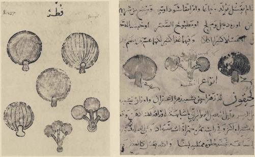

In the course of these pages we have often spoken of the different emotional
attitudes toward wild mushrooms that mark the members of the European
family of peoples. Heirs of a common Indo-European culture, sharing the same
linguistic heritage and folklore, their diversity of response to the fungi is amaz-
ing, and, we must admit, baffling. Our information is insufficient in extent and
precision for the compilation of a carte mycophagique of Europe. But by pulling
together the threads of evidence available to us we may suggest what such a
map would show, and draw attention to the curious traits that compose the
mycophobic syndrome.
In the first place, the feelings of a people for wild mushrooms are unrelated
to the supply. Wonderful mushrooms are abundant in both Norway and Mus-
covy, but the mushroom lore of the Norwegians is poor. The Portuguese are
almost as steeped in mycophobia as their neighbors in Castile, though Portugal
is by comparison rich in fungi. The Catalans live next door to the mycophobic
Spaniards, and yet the Catalans are to be numbered amongst those rare peo-
ples whose folk knowledge of the wild mushrooms is breath-taking in range
and subtlety. But perhaps the classic illustration of the point we are making is
to be found outside Europe.
The Arabian desert is not a land that mushroom-eaters would think to visit
on pilgrimage; nonetheless, we discover that the Bedouin are passionate myco-
philes. An authority on the Arabian nomads, Colonel H. R. P. Dickson, men-
tions this repeatedly in his admirable work on The Arab of the Desert, and in a
letter to us he has nobly developed the theme. While the Arab eats various
kinds of mushrooms with relish, the desert 'truffles' are his favorites. These fungal
growths, which never emerge to the surface of the earth, are usually called
'truffles' by Europeans, but in fact they belong to a different genus, the terfezia.
From classical times they have been esteemed in northern Africa, and in the
market of Damascus they are sold in quantity under the local name of kame.
According to Colonel Dickson, scattered over Northeast Arabia, on Bahrain
Island, and in the Qatar peninsula, there are spots well known to the Arabs
where terfezia grow, always in the company of the rug-rug bush, known to
science as the helianthemum Lippi. The Arab cannot count on his mushrooms.
He keeps on the lookout for heavy rainfalls in the wasm season, which corre-
sponds to our October, and if the rains then are heavy, and if they are accom-
panied by thunder and lightning, and especially if the rains recur throughout
335
CHAPTER FIVE
winter and spring, then the Arab knows the year will be good for mushrooms.
When the conditions are propitious, in February and March the black-tent folk
strike their tents, and journey to the familiar places, and then the women and chil-
dren go forth early in the morning for the sunrise, or late in the day for sunset; and
the shepherd boys, out with their flocks, are on the lookout too. For as the slanting
rays of the twilight sun streak across the horizontal earth, the practiced eyes of
the women and children detect the slight shadows cast by the monticules that
the swelling terfezia are pushing up. During the spring months of a good year,
these growths are as satisfying as meat to the Bedouin. He eats them roasted in
hot ashes and dipped in salt, or fried slightly (after soaking in water with a pinch
of salt) in clarified or fresh butter. The Arab women also slice them and dry
them in the sun, and then keep them for eating in summer, or even for years
as a food reserve. There are two kinds of these terfezia known to Colonel
Dickson, the white zobaidi, which are the best, and the khlas, smaller, brown,
and less tasty.
Europe is sharply polarized, mycophagously speaking. At opposing ends of
the Continent there are two areas where the folk knowledge about mushrooms
is prodigious, sometimes truer than the manuals, and where the affection for
them is wide and deep. There are also two areas of Europe, poles apart, where
mushrooms are generally ignored or loathed. In between are all the other peo-
ples, with varying degrees of knowledge and subtle gradations of feeling.
The Great Russians are a mycolatrous folk, and of this some readers will
consider our book manifest proof. The Poles, the Slovaks, and the Czechs are
ardent mycophiles, and are sure to resent as an impudent and even imperialistic
pretension my view that the Great Russians are in a class by themselves in this
respect. I have never heard a contemptuous remark about mushrooms from a
Great Russian; I recall none in our literature. But on an earlier page we have
seen what Poland's greatest poet says. The Czechs know their mushrooms like
few others; but why are they in deadly dread of the boletus satanas > This is a
mushroom that, properly cooked, strong stomachs can tolerate; yet the Czechs
shun it like the deadly amanita. Our neighbors the Lithuanians are great mush-
room eaters. I do not know enough about them to give them a rating. Is their
appetite for mushrooms indigenous or borrowed from the Slavs > Here is a pretty
problem to be coolly considered. It is certain that the interest in mushrooms
among the Slavs slides off as one goes South. The Ukranians show less interest,
and the Balkan Slavs are almost apathetic; it is said that the monastic clergy
in Rumania and the other Balkan countries maintain a mycophagous tradition
well above the level of the surrounding peasantry.
336
THE ANATOMY OF MYCOPHOBIA
The Finns present an interesting pattern. By tradition mycophobes, they still
reject most mushrooms. But over much of the country they have learned from
the Russians to eat lactarii, and in Carelia, where Russians used to go on vaca-
tions, they know and love many species. In the south-west there is a small area
where only the chanterelle is eaten - clearly a cultural emanation from Sweden.1
The focus of mycophagy in the West lies in that stretch of Mediterranean lit-
toral which embraces Catalonia and the Provence. In what is perhaps the best
list of vernacular names for mushrooms ever assembled, the Catalan savants
Joaquim Codina and P. Font Quer brought together a vocabulary of about
220 words, all of them genuine, identified with the localities where they were
heard.2 The country folk of Provence are similarly proficient in mushroomic
lore. Whether this intensive mycophilic knowledge prevails west of the Rhone
and in Roussillon, thus linking Provence with Catalonia, we do not know.
Just as Muscovy and Catalonia may be taken as the citadels of mycophagy,
so as to mycophobia the foci of infection are found on the one hand among
the Celts and Frisians along the shores of the Atlantic and the North Sea, and
on the other hand in Greece. The Greeks have always been mycophobes. All
of the early Greek poets - Homer through the dramatists - ignore the mush-
rooms. The earliest references to them are in the fifth century, and, as is fitting
in a mycophobic world, both refer to poisonings.3 Next we encounter Ni-
kander of Colophon, the didactic poet of the 2nd century B.C. whom we have
already cited. In his Alexipharmaca he speaks thus of the mushroom tribe:
Let not the evil ferment of the soil injure a man; it will often swell up in his chest, at
other times it will choke him, when it is fostered over the viper's coil deep in its lair,
sucking up the monster's venom and the noxious breath from its moutn. This is the evil
ferment which they call Fungi in general. [Quoted by courtesy of Cambridge University
Press from translation by A. S. F. Gow and A. F. Scholfield]
From beginning to end in the writings of the ancient Greeks we find not one
enthusiastic word for mushrooms. Even Athenaeus, that addict to the fleshpots
whose lengthy writings give us an invaluable picture of daily life in ancient
Greece, was no friend of the mushroom world. "Mushrooms grow on the
ground," he said, "and few of them are edible. Most of them cause death by
choking." The botanist Theophrastus was incompetent in his discussions of the
fungi, and while Dioscorides and Galen were better, many of their observations
1. The Finnish attitude toward mushrooms is discussed in detail in Toivo Rautavaara's Suomen Sienisato, pub
lished in Helsinki; for English summary see pp. 420-1.
2. See the botanical journal Cavanillesia, vol. m, Barcelona, 1931.
3. Athenaeus quotes Eparchides concerning a tragic episode that came to the attention of Euripides. The other
early reference is in Hippocrates, Epidemicorum, Book vn, par. 102.
337
CHAPTER FIVE
were grossly inaccurate, and they are interesting on this subject chiefly for the
further proof they offer that the Greeks were mycophobes. To this day the
Greeks pay no attention to wild mushrooms, like the English eating only
the psalhota campestris, which they call μανιτάρι, a word descended from the
classical άμανῖται.1
We believe that this mycophobia of the Greeks holds the key to the meaning,
hitherto unperceived, of a famous anecdote about Nero that Suetonius recorded.
Suetonius, writing a half century after the event, accused Nero of having been
privy to the murder of Claudius, supporting his charge by an inference: 'for
Nero used afterwards to laud mushrooms, the vehicle in which the poison was
administered to Claudius, as gods' food [deorum cibum], as the Greek proverb
has it.' This witticism, alluding to the posthumous deification of Claudius, is
stale now from age and repetition, but thanks to it we possess a Greek saying no-
where else recorded. Dio Cassius told the same story later, and later still we find
it in the writings of Petrus Patricius, a contemporary of Belisarius,2 who adds a
telling detail. When the mushrooms came on, a guest remarked that they were
gods' food, θεῶν βρῶμα. This gave Nero his opening, and how the murderous
implications of his retort must have chilled the sycophantic company! What did
the Greeks mean by 'gods' food' ? Certainly not 'food fit for the gods', which
would have called for different phrasing. Robert Graves suggests an answer.
We know from Pliny that in the fashionable circles of Rome mushrooms were
all the rage. But not so with the Greeks. It was surely a mycophobic Greek
who interposed the Greek saying when he saw the mushrooms arrive, just as an
Englishman on the Continent turns from a dish of morels because for him they
are toadstools, or just as a Fleming in former times would have scorned duivels-
brood, 'devils' bread'. 'Gods' food' and 'devils' bread', in their innermost meaning
are synonyms, verbalizing the ancient tabu. We suggest that they go back to the
time when the divine mushroom was holy and therefore unclean for all save
the king-priest.
In one striking respect the lands of extreme mycophilia and extreme myco-
phobia are alike: they are equally free of mushroom poisonings. Your Frisians
never die from toadstools, for they never touch any wild fungi. And your Pro-
ven^al villagers are equally safe, for they know which to eat. Henri Fabre in
1. On Mount Athos Russian and Greek monastic communities have lived in close proximity for centuries. In
the Eastern Church the dietary rules and customs of the monks play a big role, and it would be interesting to
learn how the addiction of the Russian monks to mushrooms has affected their mycophobic Greek brethren.
We have done our utmost, by correspondence, to arrive at the facts concerning this cultural tide-rip on Mount
Athos, but without success: the good monks seem unable to enter into the spirit of our humanistic inquiry.
2. The three versions of the episode are to be found in the Loeb editions of Suetonius and Dio Cassius.
338
THE ANATOMY OF MYCOPHOBIA
The Life of the Fly tells us that during his thirty years in the Proven9al village of
Serignan, he had never heard of even the mildest indisposition from mushrooms,
and this in face of the fact that his neighbors habitually ate many species described
in the manuals of the day as poisonous or suspect! Fatalities from mushrooms take
place where peoples are in transition, moving up in the scale of mycophagy.
There is abundant evidence that slowly, very slowly, the peoples of Europe
are learning to eat wild mushrooms. Their progress is reflected in their vocabu-
lary. Some words that were born with a pejorative curse rise in status and ac-
quire excellence in the course of centuries; such, we believe, are mousseron and
cepe in French, and boletus in Latin. More often a new and appetizing word is
borrowed from a mycophagic people to designate a mushroom that, seen in a
new light, has come to be esteemed for food. Such is 'mushroom' in English,
and champignon throughout the other Germanic lands, and boletus, which in
German has become Pilz. Specially interesting is the Swedish name for the cep:
Karl Johans-svamp, named after the founder of the present royal family, King
Charles XVI John, a Frenchman, who having risen from the ranks to become
Napoleon's General Bernadotte, was elected to Sweden's throne in 1818. It was
he who drew the attention of Swedes to the succulent properties of the boletus
edulis. We discover without surprise that the Bernadottes were a Gascon family,
hailing from that province of France which is renowned for ceps. A good Gascon,
General Bernadotte was a missionary of mycophagy to the mycophobic Swedes.
The mycophobic peoples seem to acquire their knowledge in little leaps, sug-
gestive of the quantum theory, learning to like one species after another. The
English generally know only the psalliota campestris, and the Norwegians the
cantharellus cibarius; the Spaniards of Castile eat two kinds, the mizcalo (a lacta-
rius) and the seta de cardo (pleurotus eryngii), by contrast with the vast command
of the subject enjoyed by the Catalans. The poverty of the Spanish language
when it comes to mushrooms occasionally works a hardship on Spanish writers:
in the Spanish encyclopaedias the authors of the articles on hongos must resort to
Catalan and Basque words to piece out the poor Castilian vocabulary. The
Spanish public has never been offered a Spanish mushroom manual, and if
a Spaniard should seek to explore the mushroom world, he must resort to a
Basque work, Setas u Hongos del Pais Vasco, a treatise in two slim volumes
written in Spanish by Telesforo de Aranzadi and published in 1897. Based
entirely on observations in the Basque country, it is precious especially for the
wealth of Basque vernacular names that it records. The public demand for this
work must have been modest, for the original edition is still in print and copies
are available generally in Spanish book shops.
339
CHAPTER FIVE
In Portugal the peasants know chiefly the lepiota procera, which they call
the nisco or centeiro. The Basques, with a substantial vocabulary, are well advanced
in mycophagy, but many of their words are borrowed, and mycophagy among
them is perhaps not indigenous. Strangely, they possess no name for the lactarius
sanguifluus, which is esteemed by both Catalans and Castilians. On the other
hand, we can testify that in Viscaya the Basques manifest an addiction for the
russula virescens. In the west of that western Basque province, this mushroom,
which is the best of the russulas, is called by a specific name -guibelurdina,
but in Guernica it appears to so dominate the field of mycophagy that it becomes
simply the 'mushroom' - perretxiko.
Various strands of evidence support our view that Western Europe is pro-
gressing in mycophagy. Take Italy, for example. Today immense quantities of
mushrooms are eaten there, and the local names are numerous. But we observe
that poisonings often occur - a sure sign of imperfect knowledge. From Pliny
and other ancient writers we know that certain mushrooms were fashionable
among the fastidious elite in imperial Rome, but if we ask our question about
the rest of the population, we must admit that we know little. Apicius gives
us various mushroom recipes, and Pliny describes several kinds with suf-
ficient detail for us to guess at their identity, in two or three cases with con-
fidence. But Pliny himself looked down his nose at mushrooms, and there is
one sentence in his Natural History that, almost by inadvertence, reveals his own
mycophobic leanings. With some impatience he admits that others know more
about mushrooms than he. "Who, in fact," says he, "is able to distinguish
among them, except those who dwell in the country, and those who are in
the habit of gathering them?" That is, who knew the mushrooms except the
untutored rustics, mute for us, and the minions of the epicures in the great
city? As to the epicures, Pliny with disdain tells us that mushrooms were the
only dish they would prepare with their own hands, thus relishing them twice
over, once in anticipation and once in the eating. Here are the rich phrases of
Pliny's Elizabethan translator, Philemon Holland:
. . . our fine-mouthed and daintie wantons who set such store by their tooth, take
so great delight to dresse this onely dish with their owne hands, that they may feed
therupon in conceit and cogitation all the while they bee handling and preparing the
same, furnished in this their businesse with their fine knives and razors of amber, and
other vessels of silver plate about them.
On an earlier page we saw that fungus was an epithet in ancient Rome, the
equivalent of 'dunce' or 'gump' in English - an indication that the people who
so used the word had little esteem for mushrooms.
340
THE ANATOMY OF MYCOPHOBIA
Jumping now to Renaissance times, we open the earliest printed cookbook,
entitled De Honesta Voluptate, attributed to a Vatican dignitary named Platina
and printed in Rome c. 1474. There we find a section on mushrooms, and it is
a farrago of mycophobic nonsense, of a kind that would not be tolerated by
discriminating Italians today. It must have expressed more or less the sentiments
of the upper crust in the Rome of Platina's day. This work was translated into
many languages and it almost monopolized the cookbook market for a century
and more. The French version, of which we have consulted an edition published
in Lyons in 1505, has a peculiar linguistic interest: the translator uses various
words for 'mushroom' and among them is fonge. This may have been the
translator's bookish invention; at any rate/onge never took hold in France, the
only part of Romanic Europe where fungus has had no verbal progeny in the
vernacular.
Two centuries before Platina another Italian, Aldobrandino da Siena, com-
posed in French a medical treatise, Le Livre pour la Sante du Corps, at the behest
of the Countess of Provence, Beatrice ofSavoy.lt appears to have been finished
in the year 1256 and it survives in many manuscripts copied in the course of the
ensuing centuries. Aldobrandino relied heavily on the writings in Arabic of a
10th century physician living in Egypt, Isaac Judaeus. Here too we find a chapter
on mushrooms. Aldobrandino writes in the purest mycophobic vein, the best
that he can say of mushrooms being this, that some there are which are not so
bad. Though written in French, the Aldobrandino work cannot of course be
taken as an expression of a French attitude. It is of special interest to us for the
illuminated initial with which the chapter on mushrooms begins.
Coming to France itself, we begin by observing that the French Canadians
know nothing of wild mushrooms and never eat them. Their ancestors came
largely from Poitou, with a sprinkling of Basques, Bretons, Channel Islanders,
and Normans. A conservative people, the habitants would not have given up
mycophagy in the New World, where the forests are rich in kinds that are
common in France. It seems probable that in their ancestral lands mushrooms
were not eaten three centuries ago, and certainly this is still true of the Bretons.
Mycophagy in France is spreading north from the Midi and Gascony. The re-
ports of poisonings, the modern diffusion of new names like cepe, the constant
revision of municipal regulations governing the sale of mushrooms - these all
bear witness to growing pains as mycophagy gains ground. Though wild
mushrooms are commonly offered in the marketplaces of France in the appro-
priate seasons, it is not unusual to meet French folk who know nothing whatever
about them, not even the names of some of the common kinds. Van Sterbeeck
341
CHAPTER FIVE
in his Theatrum Fungorum on page 117 quotes Clusius, native of the French city
of Arras and father of modern mycology, as saying that he had never eaten a
mushroom! An underlying mycophobia would explain the readiness of the
French to associate wild mushrooms with toxic properties. The king of the
elephants in Babar dies, in defiance of nature, from eating a fly amanita; and the
death of this beloved albeit imaginary beast implants the microbe of mycophobia
in the defenceless minds of countless children. One of the best French movies,
Sacha Guitry's Le Tricheur, hangs its story on the death of a whole family from
mushrooms. Jules Romains in his play, Knock ou le Triomphe de la Mededne,
introduces a lady of the French landed aristocracy who sells a property called
la Michouille where mushrooms never grow, the very name being derived from
mycodium, 'hate of mushrooms', a strange conceit that we think only a myco-
phobic writer would invoke. But in Marcel Moussy's Arcole ou la Terre Promise
there is an idyllic setting in which a young couple go mushroom gathering.
Certain gastronomes among our French friends resent our imputation of my-
cophobia to the French. But take Montaigne. This giant of the Renaissance,
who poured the rich contents of his mind and feelings into his essays, ignores
the fungal world. Not even truffles are so much as mentioned by this son of
Perigord. True, Montaigne had apparently little interest in food and drink of
any kind. But then let us look at his elder contemporary, whom he admired,
Fran9ois Rabelais. When Epistemon visits the abode of the damned, he dis-
covers there all the personages of antiquity, and finds that for all eternity
they are condemned to menial and insignificant occupations: Alexander the
Great darns breeches while Dido peddles mushrooms! Elsewhere Rabelais pre-
sents to his readers an obnoxious character called Lent-observer whose pinched
soul knows only denial. He had a potiron, mushroom, for a chin, and his
excrement consisted of morels and toadstools. There is never a kind word for
mushrooms in Rabelais, this native of Chinon in the very heart of France.1
It is never easy to trace down the centuries the gastronomic role of a kind of
mushroom. Perhaps the distinctive truffle offers us the best opportunity for
such a chronicle, yet here too we encounter contradictions. According to M. G.
Malen9on in Les Truffes Europeennes,2 for a thousand years after the fall of the
Roman Empire no one in Italy or France paid attention to truffles. In the I4th
century they reappeared. During the Renaissance the truffle of Perigord - tuber
melanosporum - established its ascendancy, and with some ups and downs
thereafter maintained a secure place high in the firmament of gastronomic
1. Rabelais refers to mushrooms in Book n, chap. 30; and in Book rv, chapters 31, 50, 57, and 60.
2. Published as Memoir hors-serie N° i by the Revue de Mycologie, April I, 1938.
342

PLATE LVI. Illuminated initial from a I5th century manuscript (No. 165) of
Le Livre pour la Sante du Corps, by Aldobrandino da Siena, 1256.
New York, The Pierpont Morgan Library.
THE ANATOMY OF MYCOPHOBIA
values in the most exalted circles of France. We have already seen that the English
diarist Evelyn was making the acquaintance of truffles in Vienne in the lyth
century, and after the Restoration in England they begin to appear in cookbooks
across the Channel. Yet we have also seen that Brillat-Savarin in the early
iQth century considered the truffle a modern innovation in Paris. These seeming
contradictions can be reconciled when we remind ourselves that we are dealing
with accidental references by writers belonging to the articulate elite of France
and England. In our section on the truffle we produced linguistic evidence
showing that the truffle was always an article of commerce in the humble market-
places of the Mediterranean peoples, bought and sold and consumed by countless
generations of unlettered folk.
In the beginning the Germanic world was steeped in darkest mycophobia.
Certainly nowhere in European literature is there a more perfect expression of
loathing for mushrooms - all the more eloquent because taken for granted -
than in the writings of Saxo Grammaticus, the Danish historian who flourished
about A.D. 1200. He was telling of a military campaign waged in Sweden
by Hadding the Dane in the loth century, and how the Danes ran out of pro-
visions, and were driven to the last extremities of hunger. Here in Book I:
viii: 7 of his Saxonis Gesta Danorum we discover the low opinion in which the
Danes of olden times held wild mushrooms:
. . . After the spring thaw, Hadding returned to Sweden and there spent five years
in warfare. By reason of this lengthy campaign, his soldiers, having consumed all their
provisions, were reduced virtually to starvation, and resorted to forest mushrooms to
satisfy their hunger. Finally under pressure of extreme necessity they ate their horses,
and in the end they satisfied themselves with the carcasses of dogs. Even worse, they did
not scruple to eat human limbs.
Now that the passing centuries have dimmed for us the personal sufferings of
Hadding's host, we may permit ourselves to be amused by the graduated stages1
of their desperation as reflected in their diet, and our thoughts turn to what
soldiers of other origins would have done in a like pass. Had they been Celts,
they would surely have eaten horses, dogs, and each other before turning to the
I. An amusing parallel to the plight of Hadding's host is to be found in the Spanish classic, El Viage Entrctenido,
by Agusrin de Rojas, a contemporary of Shakespere. This narrative gives a vivid picture of the miseries and
adventures that were the lot of strolling players in Spain at that time. The troupe are making their way from
Barcelona towards Madrid:
After having exhausted our money [five reales\, sold everything that we had left, often eaten of the mush-
rooms that we gathered along the way, slept on the ground, tramping barefoot (not for the mud but
because we had no footwear), helped muleteers load their beasts, fetched water for the mules, and
sustaining ourselves on turnips for four days and more — stealthily one night we came up to an inn-----
The italics and translation are ours.
343
CHAPTER FIVE
foul fungi of the forest. If they had been Slavs of the North, they would have
been feasting on those noble mushrooms from the outset of their long campaign,
and, fortified by the delectable fare, would have engaged the enemy like lions,
and most certainly turned the tide of war. Until General Bernadotte, when
King of Sweden, spoke well of ceps, neither Lapps nor Swedes ate mushrooms.
We know this because Linnaeus tells us so. In the section on the fungi in his
Flora Lapponica, he observes that in Sweden only foreigners consider mushrooms
fit for eating, nor does he except himself from the general rule. What a pity
that the great Linnaeus was a mycophobe!
As for the Lapps, Linnaeus in the same work tells us where their fungal interest
lay, and the passage is unique in ethno-mycological records. Linnaeus devotes a
lengthy section of his work to the fungi of Lappland, and as he comes to the end
and is describing Boletus 522, which he calls 'suavaeolens', he reports that the
young Lappish swains when stepping out to keep company with the Lappish
girls would carry this fungus in a little bag over the male member, that its scent
might please the nymphs. The 'boletus' used in this way, according to Professor
Heim, was undoubtedly the trametes suavaeolens Fr. ex Linn., conspicuous for
its strong odor of anise. Linnaeus was frank in his description:
Adolescentes hunc inventum sollicite servant in marsupio ante pubem pendulo, ut gratiorem
odorem spirantes nymphis suis placeant. [Italics ours.]
When Knut Hagberg brought out his life of Linnaeus in 1939 he deprived
this delightful passage of its sap by translating ante pubem pendulo as 'on the
stomach' (pa magen), and his English translator further diluted Linnaeus by
hanging the fungus 'from the waist'! Such is the prudery that censors the classics!
The Lappish custom moved the mycophobic Linnaeus to indulge in a discursive
rhapsody of the kind that lesser scientists frown upon:
O ridicula Venus, tibi, quse in exteris regionibus uteris caffea & cocholata, conditis &
saccharatis, virus & bellariis, gemmis & margaritis, auro et argento, serico et cosmetico,
saltationibus & conventiculis, musica & comoediis, tibi sufficit his solus exsuccus fungus.
O whimsical Venus! In other climes you ask for coffee and chocolate, pickles and
sweetmeats, wines and goodies, gems and pearls, gold and silver, silks and cosmetics, balls
and parties, music and the theater. Here your wants are met with a little withered fungus!
We can show that long after Saxo Grammaticus, and even after the Reforma-
tion, mycophobia was still rampant in Germany. A few years ago there was
discovered in the Copenhagen Royal Library a document of high cultural
interest. It was penned early in the lyth century by a Hanseatic merchant of
344
THE ANATOMY OF MYCOPHOBIA
Lubeck who had sojourned long enough in Pskov to learn the Russian dialect
of that city. The manuscript is a textbook of colloquial Russian, giving as
exercises in Russian phraseology authentic dialogues recorded by the author.
Among them are a few between Russians and Germans in which each side praises
the life of his own home town. In the course of one such colloquy we come upon
a German mycophobic boast of priceless value for our argument, proving as it
does the contrast between Russian and German attitudes toward the fungal world.
Here are the texts in the Russian dialect of Pskov and the German dialect of
Lubeck, along with an English translation by Mrs. Elizabeth van Schooneveld,
who is now editing the manuscript for publication:
Nashi nemetzkie ljudi zhivut kak [g]ospodari, svezhe mjaso da svezhi ryby jedjaft] da
vina da pivo p'ju[t], da vashi ljudi kak psy borzye, ryzh[i]ki griben jedja[t] da p'ju[t]
vodu i kvas.
Unse dutsche lude leuen alse heren ehten fersch flesch und fersche fische, und drincken
wyn und beer, und juwe volk alse beste und wynthunde ehten poggenstole und drinken
wahter und qwasz.
Our German people live like lords, eat fresh meat and fresh fish and drink wines and
beer, and your people like beasts and coursing hounds, eat toadstools and drink water
and kvas.
The aspersion thrown into the teeth of the Russians by the merchant of
Lubeck is corroborated by linguistic evidence of singular probative value. The
Jews of Germany some centuries ago migrated east into the Slavic lands, taking
with them their language based on medieval German dialects, which we know
as Yiddish. The mushroom vocabulary in Yiddish is largely Slavic, borrowed
after the migration. The generic term for 'mushroom', however, is shveml, a
diminutive form from the German Schwamm; the favorable Pilz has no continua-
tion in Yiddish. It is clear that when the Jews migrated to Poland, they took no
tradition of mycophagy with them. Apparently the Germans began eating
mushrooms late in the Middle Ages, and needing a word to dignify the new
dish, they turned to the Latin boletus, which in Valerius Cordus (1551) had
become Boltz and in Clusius (1601) was Btiltz and is today Pilz. Thus Pilz
entered Germany's fungal vocabulary at the top, to suit the dinner-table, while
at the lower end of the scale the pejorative Krotenschwamm, also recorded by
Clusius as current in his day, fell into disuse and finally disappeared from High
German. Here we see how a change in names reflected, and at the same time
encouraged, a change in attitude toward the eating of wild fungi. It is noteworthy
that the growth of mycophagy in Germany appears to have been a response
345
CHAPTER FIVE
to Mediterranean influences descending culturally from above, rather than an
eruption of the Slavic substratum that was still strong in Central Europe.
Today in Sweden and Denmark and Southern Germany and German Swit-
zerland, bands of young people go out in season from the cities to gather
mushrooms. The market places of Southern Germany and Switzerland are
well stocked with many kinds of wild mushrooms. Is not this interest a modern
thing, perhaps as modern as the sport of mountain-climbing ? Do the rustics
know their mushrooms as these city youths do - except as the market demand
of the cities has led the country folk to respond by gathering the appropriate
kinds > Is there not here a cultural penetration that began with the sophisticated
city circles and spread thence to the countryside ? Dr. J. Schlittler, Pilzkontrol-
leur of Zurich, confirms our suspicion. He tells us that in the back valleys of the
Alps the peasants still reject all mushrooms, still view them through medieval
eyes, clinging to the old mycophobic beliefs. We also learn that the Romansch-
speaking country folk of the Surselva and the Engadine know nothing of
edible wild mushrooms and care nothing, though in these lovely valleys they
grow in abundance. There is evidence that while Otto Bismarck was serving
as Ambassador in Russia around 1860 he discovered and mastered the art of
mushroom knowing, and acquired a taste for mushroom hunting and marinated
mushrooms that he took back with him to Germany.1
Though we think mycophagy among the Swiss is a modern growth, its
hold is already secure. A story, told to us in Geneva as true, bears witness to this.
An aged countryman in the Suisse Romande found himself borne down by
the infirmities of age and the loss of those dearest to him. There came a time when
he invited a young friend to pass a long and arduous day with him in the moun-
tains. A glorious day it was, in the course of which the old man took pains to
reveal to his companion with painstaking precision all of the spots known to
him where mushrooms grew, various kinds of mushrooms but especially morels,
knowledge slowly gathered on solitary rambles made for that purpose over the
course of a long life. Marveling to himself at this untoward behavior, the young
man showed proper appreciation and made careful note of all the locations.
That night the unhappy octogenarian took his own life. His penultimate act
had been to pass on to the youth of his choice his precious possession, a worldly
legacy that no testamentary provision could have conveyed.
Indifference that overlies a sleeping hostility is the attitude toward wild mush-
i. See letter written by Konstantin Leont'ev dated Dec. 3, 1887, published in Bogoslovskij Vestnik, 1914, No. 4,
pp. 776-7. Professor Cizevsky, who discovered this reference, raises the further question whether the sour
cream often served with 'Bismarck herring" was not borrowed from the Russian cuisine, perhaps from a favorite
way of serving mushrooms.
346
THE ANATOMY OF MYCOPHOBIA
rooms of the typical mycophobe in a country like England. He and his neigh-
bors think alike about these creatures; rather, they react alike, for they do not
think, ignoring as they do their own infirmity. The mycophobe does not ini-
tiate a discussion about wild mushrooms. If the subject comes up in his pre-
sence, instantly he is on his guard. He is almost sure to recall some fatal
episode involving poisonous mushrooms that, he says, came within his
personal experience. He admits grudgingly that some good wild mush-
rooms exist, but his strongly held view is that all are dangerous save a few, and
these no amateur can be relied upon to identify. Yes, identification is difficult
and never sure. As like as not, the mycophobe will tell you that every good kind
has its deadly counterpart, as though Divine Providence had deliberately laid
booby traps to catch the fool who insists upon hunting mushrooms. He is apt to
go on and suggest that kinds familiar to you in your country may well be deadly
hereabouts. He volunteers his advice for your own good, as one who wishes
to be clearly on record that your death will be on your own head. He is dogmatic,
his voice has a cutting edge. If you are bold and put questions to him, you
discover at once that he knows nothing about wild mushrooms, and that he is
happy and even determined to remain in invincible ignorance, feeling that that
way safety lies. Furthermore, this mycophobia of the North Sea basin is a
dominant trait. The English-speaking mycophobe when he goes to live in a
mycophagous country seldom learns to know the mushrooms and avoids eating
them. By contrast, the mycophagous Slavs who live in England or the United
States sometimes succumb, albeit slowly, to the steady pressure of the hostile
environment, weakly accepting the facile advice of well-meaning but ignorant
neighbors who assure them that the species they knew and loved in the lands of
their childhood become deadly, for some mysterious reason, inside the political
frontiers of an English-speaking world. How truly John Parkinson spoke for
his countrymen when in 1640, in his Theatrum Botanicutn, he begins his chapter
on the 'Dangerous Mushrooms' with the observation that he can be brief about
them, for it would be to little purpose (as he says) to dwell on them, inasmuch
as the English need no caution "to beware of the bad, seeing our Nation is
not so enclined to the good".
The Englishman's rejection of the mushroom tribe is a Pavlov reflex. We have
known Englishmen who retch at the thought of eating a wild mushroom, just
as some orthodox Jews do at the thought of pork. Wilmarth Lewis, presiding
over the world of Horace Walpole, has drawn to our attention a delightful
passage in a letter that Walpole wrote on October 17, 1758, to Lady Hervey.
On the flimsiest provocation, the Duke of Newcastle had lately given an exhi-
347
CHAPTER FIVE
bition of violent mycophobia that must be considered classic. For the sake of a
quotation from Jeremiah, Walpole changes Newcastle's famous chef Chloe into
a woman. Here is the episode in Walpole's words:
This will be a melancholy letter, for I have nothing to tell your Ladyship but tragical
stories. Poor Dr Shawe being sent for in great haste to Claremont (it seems the Duchess had
caught a violent cold by a hair of her own whisker getting up her nose and making her
sneeze) — the poor Doctor, I say, having eaten a few mushrooms before he set out, was
taken so ill, that he was forced to stop at Kingston; and being carried to the first apoth-
ecary's prescribed a medicine for himself which immediately cured him. This catastrophe
so alarmed the Duke of Newcastle that he immediately ordered all the mushroom beds
to be destroyed, and even the toadstools in the park did not escape scalping in this general
massacre. What I tell you is literally true. Mr. Stanley, who dined there last Sunday, and is
not partial against that court, heard the edict repeated, and confirmed it to me last night.
And a voice of lamentation was heard at Ramah in Claremont, Chloe weeping for her
mushrooms, and they are not!
There is a striking contrast between mycophobic and mycophilic peoples
when it comes to fungal vocabularies. In Muscovy and Provence and Catalonia
the countryfolk possess a huge vocabulary, familiar to all, and ancient. If in
those countries there be any who do not know their mushrooms, these benighted
individuals are pitiful city-bred waifs, cut off from the land that gave them
birth and from their proper cultural heritage. In mycophobic countries, the far-
mers know almost nothing about wild mushrooms and speak of them with
two or three undiscriminating words. But in the cities there will be found little
circles of amateurs who make a hobby or cult of their mushroomic knowledge,
and who learn from manuals a large vocabulary that circulates only on their
lips. The run of rustic English folk know 'toadstool', 'mushroom', 'puffbalT, and
possibly a few localisms. If the countryman knows 'fungus', it is as a learned
word. Only in cities and in esoteric circles, does one hear of truffles and morels
and ceps, not to speak of death-cups, destroying angels, shaggy-manes, and all
the other book-words that the manuals carry. The reader of these manuals is at
a loss about these so-called vulgar names. Some are clearly of venerable lineage.
For example, no mycologist would have invented the 'horse mushroom' for the
psalliota arvensis; the term belongs with 'horse-radish', 'horse chestnut', and
'horse mussel', wherein the first element means 'large' or 'coarse'. We think
also that 'shaggy mane' for the coprinus comatus may be a word of respectable
lineage: as long ago as 1802 A. F. M. Willich in The Domestic Encyclopedia was
writing about the 'shaggy spunk', a mushroom known to science in his day as
the boletus hirsutus. On the other hand, where a common name is wanting, the
mycologists seem to have invented fanciful neologisms to meet the need, without
troubling to distinguish genuine localisms from the fruit of their own fancies.
Today there are excellent mushroom manuals in France and England, but
until our generation the manuals in those countries were often saturated with
mycophobic caution. I possess the Russian manual, published in 1903, that origin-
ally belonged to Tatiana, daughter of Nicholas II, in which in childish hand-
writing she wrote her name. It is a delightful book, full of friendliness for wild
mushrooms, all of which seem to be considered good except two or three kinds
that are cursorily dismissed. By contrast, some of the older manuals of France
and England deliberately set out to frighten the reader. They are filled with
labored warnings, giving the impression that all mushrooms are bad except a
few kinds that even the careful reader can hardly hope to learn, even if he uses
utmost care. By a curious twist of fate, this excess of caution in the manuals
once accidentally contributed to the undoing of a murderer, as we have seen
in our account of 1'affaire Girard.
Wild fungi are an emotional trip-hammer for mycophile and mycophobe
alike, and in the poets with their heightened sensibilities the contrast in the
response to fungi is sharpest. Professor Roman Jakobson was spending the sum-
mer of 1919 in Pushkino, near Moscow, with the poet Vladimir Majakovskij,
who would go out almost daily into the forest to look for mushrooms. He would
usually return with a large basket full of them. He knew them all and where
to look for every kind. He told his companion that mushroom gathering offered
the ideal accompaniment for the composition of poetry, and in the course of that
summer he composed the best parts of his epic, 150 Million, while engaged in
this pastime. During the previous season, in 1918, he had conceived his play
Mystery Bouffe in the woods among the mushrooms.
Now contrast Majakovskij's feelings with those of D. H. Lawrence. Not long
after the scene in Pushkino, the Englishman wrote his poem entitled How
Beastly the Bourgeois Is, and to match the repugnance that he felt for his subject,
he resorts to mushrooms for his analogy:
How beastly the bourgeois is
especially the male of the species -
Nicely groomed, like a mushroom
standing there so sleek and erect and eyeable -
and like a fungus, living on the remains of bygone life,
sucking his life out of the dead leaves of greater life than his own.
And even so, he's stale, he's been there too long, Touch
him, and you'll find he's all gone inside just like an old
mushroom, all wormy inside, and hollow under a smooth
skin and an upright appearance.
Full of seething, wormy, hollow feelings
rather nasty -
How beastly the bourgeois is!
Standing in their thousands, these appearances, in damp England
what a pity they can't all be kicked over
like sickening toadstools, and left to melt back, swiftly
into the soil of England.
Here then in these two literary artists we discover the perfect mycophile and
the perfect mycophobe. For the Russian a world carpeted with mushrooms is
Elysium. For the Englishman that same world conjures up foul exhalations rising
wraith-like from rotting swamps, and the mephitic horror turns his stomach.
350

PLATE LVII-A. Mushrooms. Miniature from a pth century codex
PLATE LVII-B. Mushrooms. Miniature from an nth century manuscript
(Grec 2179) of Dioscorides. P^m, Bibliotheque Nationale.
(Arabe 4947) of Dioscorides. Paris, Bibliotheque Nationale.

PLATE LVIII. Mushrooms. Miniature from a loth century manuscript (No. 652) of Dioscorides.
New York, The Pierpont Morgan Library.